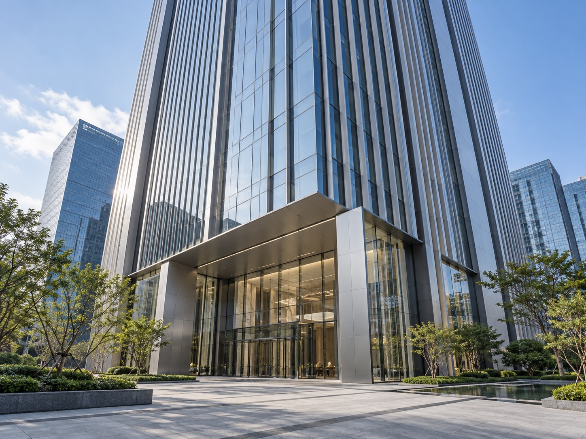

직영 유지관리
하청 없이 직접 점검하고 고장에 대응합니다.
구일엘리베이터 · 회사소개
서울·경기 전역, 승강기 2,123대를 관리합니다.
서울·경기 전역에서 승강기 유지관리와 보수·설치공사를 진행합니다.
승강기 상태와 검사 이력을 확인해 점검하고, 필요한 부품 교체와 공사를 안내합니다. 하청 없이 직접 관리하며, 24시간 고장 대응 체계를 운영합니다.
고장 접수부터 기사 배정, 출동, 조치 결과까지 기록하는 시스템을 직접 개발해 운영하고 있습니다.

서울·경기 전역 유지관리
야간·휴일에도 현장 출동
고장 접수와 현장 조치 내역을 함께 확인
관리 대수: 2026년 10월 제공 현황 기준.
하청 없이 직접 점검하고 고장에 대응합니다.
휴일을 포함해 고장 접수와 현장 대응 체계를 운영합니다.
현장별 고장·점검·교체 기록을 관리합니다.
건물 주소, 승강기 기종, 최근 검사 결과를 알려주시면 상담에 도움이 됩니다.